Shows
all missing elements.
Shows
all missing elements.This chapter comprises the following topics:
When importing a model from an existing model definition in XML format, you can choose an existing model as your target model or create a new one containing exclusively the imported information. In the first case the new information will have to be merged with the information already existing in the model, whereas in the latter case a new model will automatically be created.
To import a file in a new model:
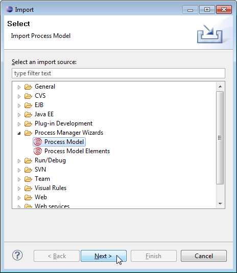
Figure: Import Process Model
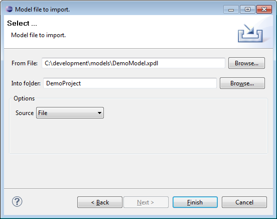
Figure: Importing a Model
Note that if the chosen file stores a model with an ID already present in the process modeling repository, the import will not be performed. Although you can open a model version with the same ID by importing model elements (see section Importing Model Elements), you will be prompted to commit or reject changes in the model during merging of model information performed at this point.
Please note that it is important to save your target model before importing elements from another model as the changes will be lost otherwise.
To import only parts of another model:
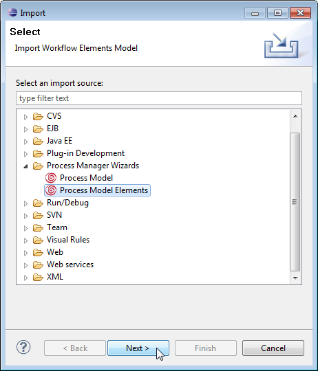
Figure: Import Model Elements
Then browse to the directory where you find the file containing the elements to import. It is your responsibility that the imported elements form a consistent constellation of model information.
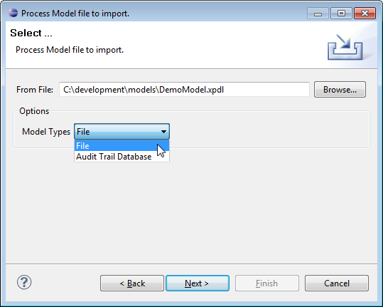
Figure: Importing Model Elements
To start the merging operation the source model and the type of
the model (File or Audit
Trail Database) have to be chosen. After pressing the Next
button, the comparison dialog will be opened.
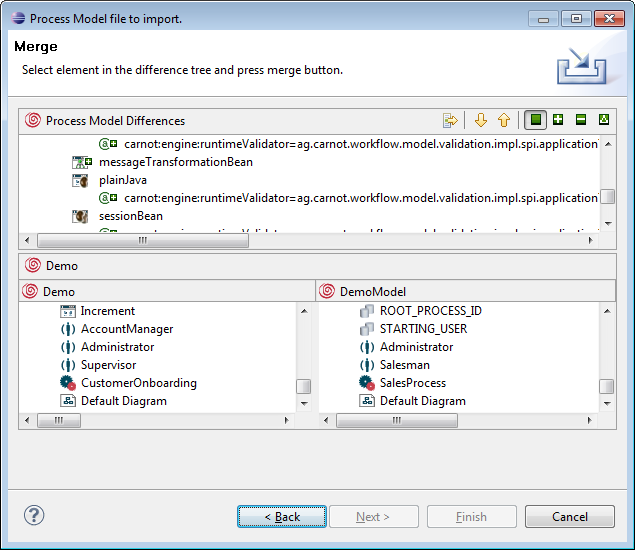
Figure: The Comparison Dialog
The comparison dialog consists of three areas:
The Differences tree shows all differences of the two models. Elements that are in the Target Model but not in the Source Model are marked with a green plus sign. Elements that are not in the Target Model but exists in the Source Model are marked with a green minus sign. Changes will be displayed within the node name of the element. The details of a node will be shown in the two areas below if a difference node is selected. It is possible to filter the differences tree by showing only additive, subtractive or update changes.
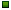 Shows all differences.
Shows all additional elements.
Shows
all missing elements.
 Shows
all changes.
Shows
all changes.
To transfer a difference from the Source Model to the Target Model it is necessary to select a node in the Differences tree and press the button:
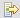 Copy Selected Nodes from Left to Right.
The node with all its child nodes (differences) will be transferred. By transferring a subtractive difference the selected element will be deleted out of the Target Model. The import of the elements is only accepted after pressing Commit.
You can navigate through the changes by using:
residing in the upper right corner.
Please note that if you import structured data elements, the corresponding structured data types definition will not be imported automatically. In this case preferably use the copy and paste mechanism of the modeler, where the structured types the data refers to, will be copied to the model as well. Please refer to the chapter Copying and Pasting Modeled Elements for detailed information on how to copy and paste model elements.
Another alternative would be to export the structured data types as XSD file and then import it back to the same XSD file in the destination model. Please refer to the section Exporting Types of the Defining Structured Types chapter for detailed information on how to export structured types.
If you want to do re-engineering of a model deployed to the audit trail, from the model's pop-up menu, select Import... and choose Process Manager Wizards > Process Model from the list in the upcoming dialog. That can be useful if you lose model information. See also Loading Models from Audit Trail.
Per default, xml parsing messages during model loading are not displayed. In case you like to have these messages displayed, set the property carnot.log.load.filter in your server-side carnot.properties file to true.
In some cases you like to import a model that has an incompatible format, e.g. in the following cases:
A message is displayed asking you to update the model to the current specification:
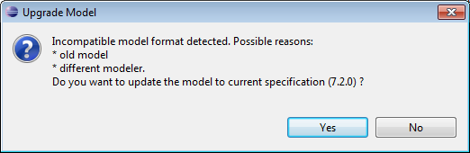
Figure: Message Dialog for Importing Models with incompatible Format
Click OK to update and import the model.
Some model elements created in the Portal Modeling perspective are not supported in the Eclipse modeler and vice versa. For details on the compatibility of models created in the Modeling perspective and models created in the Eclipse modeler, refer to chapter Compatibility and Analogy of Models in the Business Process Modeling Handbook.
Rule Tasks are not supported in the Eclipse modeler. In case you import a model created in the Modeling perspective containing a Rule Task, an application activity with a generic application is created for the Rule Task in the XPDL file.
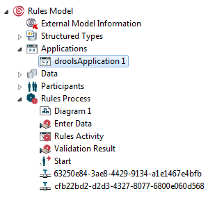
Figure: Generic application created for imported Rules Task
To export the information from your currently open model to a .xml or .xpdl file:
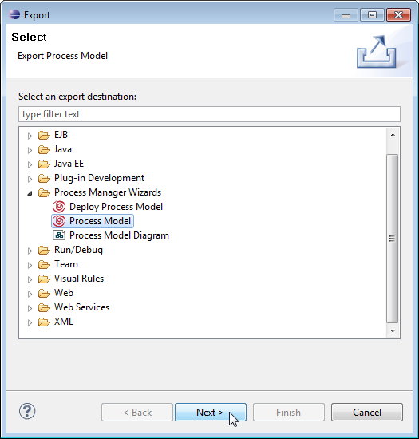
Figure: Exporting a Model
Select the model or models to export from the list and the directory where they should be stored.
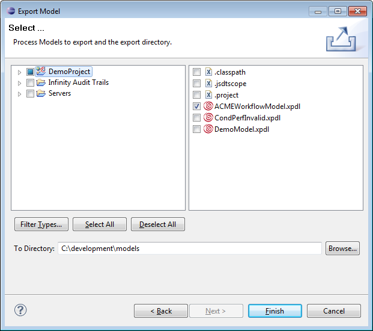
Figure: Exporting Models
For details on process model file formats please refer to chapter The Model File Format.
As a kind of export functionality you can generate reports. That means you can export diagrams to an external graphical representation, like a JPEG or PNG file.
To export diagram in the main menu choose File > Export... > Process Manager Wizards > Process Model Diagram.
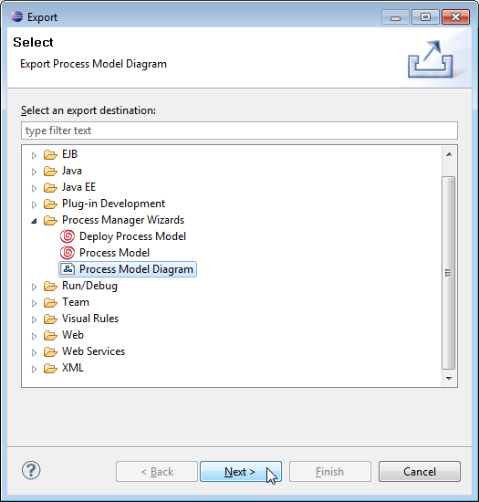
Figure: Exporting a Diagram
In the upcoming dialog wizard select the model you want to export from.
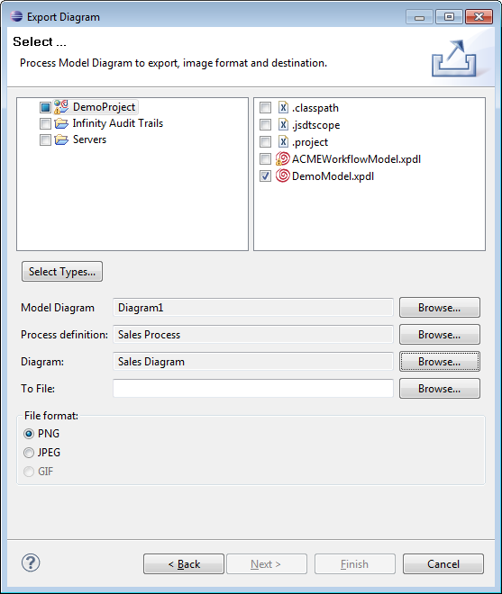
Figure: The Exporting Dialog
You can optionally browse a process definition to choose.
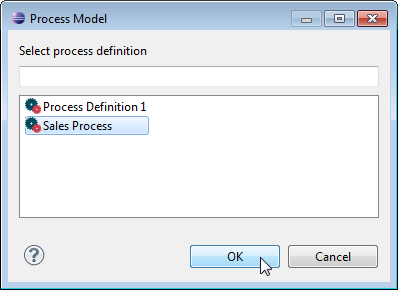
Figure: List of Process Definitions
To choose the diagrams you want to export, select them from a list provided in a new dialog after pushing the corresponding browse button. If no process is selected, all the diagrams found in the model are listed. If a process is selected, only the diagrams of this process are listed.
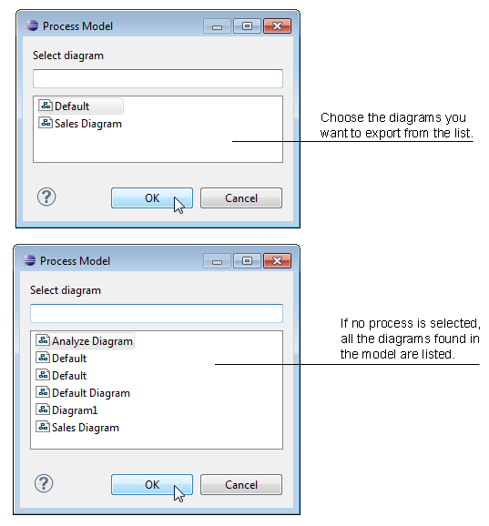
Figure: List of Diagrams
In the section To File browse to a file or directory, where you want your diagrams to be stored. If there are more than one diagram to export, the browser will asks you for a directory to write the image files in. It will use default names for the files, which are composed of the name of the model, followed by the name of the process and the diagram's name. If there is only one diagram selected, the browser prompts you for a filename. In the file format area choose the file format you want your diagrams to be saved as.
There are also some possibilities to export your diagrams more quickly.
In the Outline view:
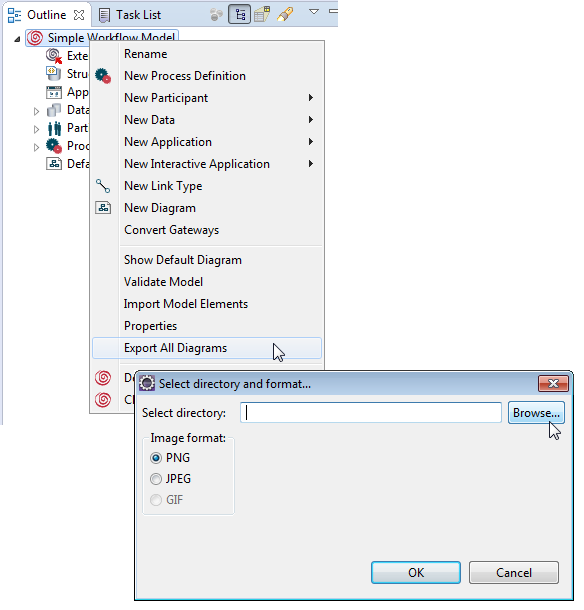
Figure: Exporting from Selected Model
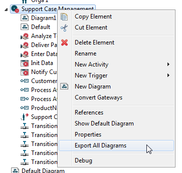
Figure: Exporting from Selected Process
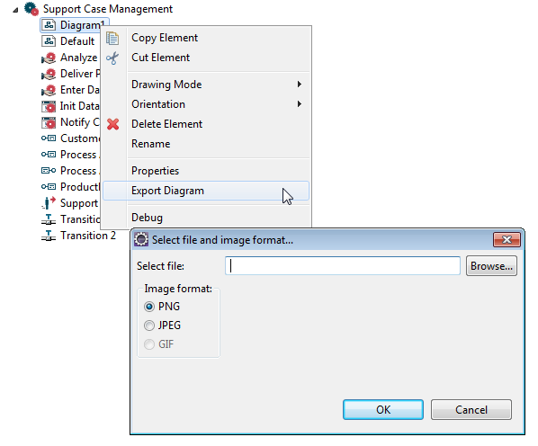
Figure: Exporting from Selected Diagram
You can also export your diagram directly from the Outline view by right-clicking in the diagram area and selecting Export Diagram from the pop-up menu.
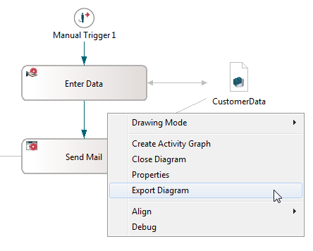
Figure: Exporting a Diagram
After finishing all your modeling, you should deploy your model to the audit trail for process execution. Be sure that a database driver is in the classpath and you configured the connection parameters in the carnot.properties correctly.
To deploy a model:
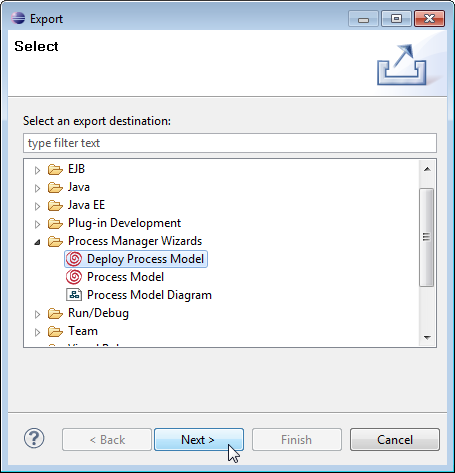
Figure: Deploy a Model
In the Deploy Process Model Wizard select the model(s) to deploy.
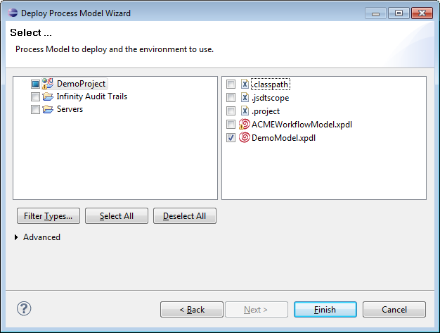
Figure: Deploying a Process Model
Please refer to the chapter Deploying a Workflow Model for detailed information on model deployment.